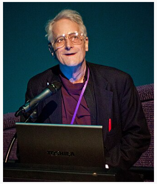
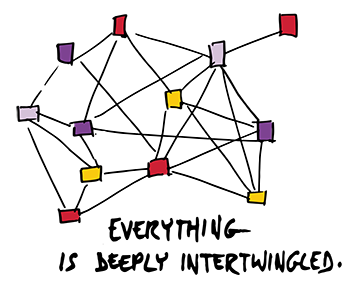
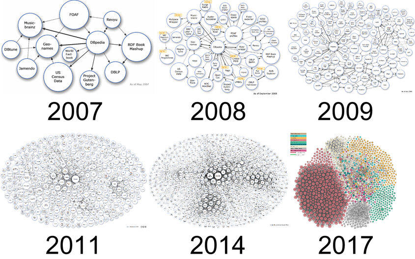
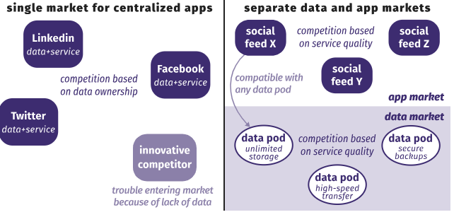

Vannevar Bush (1945) — As We May Think et le Memex
En 1940 1945, Vannevar Bush publie l'article As We May Think dans lequel il décrit le Memex, un dispositif
imaginaire destiné à stocker, lier et retrouver rapidement des documents et des notes. Bush imagine des
"trails" (chemins) qui relient des documents entre eux (Bush, Nelson, Engelbart) un concept très proche de
l'hypertexte.

Importances : le Memex a servi de référence conceptuelle pour les idées d'hypertexte et de recherche documentaire. Les notions de stockage associatif et de navigation non-linéaire y sont déjà présentes.
Ted Nelson — l'inventeur du terme "hypertexte" et le projet Xanadu
Dans les années 1960, Ted Nelson formalise le terme hypertexte et propose le projet ambitieux Xanadu, qui vise à créer un système mondial de documents interconnectés, avec des liens bidirectionnels, gestion des versions et micropaiements intégrés.
 Le projet Xanadu n'a jamais atteint une implémentation mondiale, mais il définit des idées fortes : liens permanents, traçabilité des citations, granularité fine des références. Ces concepts reviendront plus tard dans les discussions sur l'archivage et la citation sur le Web.
retour au menu1989–1991 — Tim Berners-Lee au CERN : HTML, HTTP, URL
Tim Berners-Lee propose, au CERN, un système pour partager des documents entre chercheurs en utilisant l'hypertexte et Internet. Il formalise trois composants essentiels :

- HTML(HyperText Markup Language) — format pour structurer documents et liens.
- HTTP(HyperText Transfer Protocol) — protocole d'échange client/serveur.
- URI/URL — mécanisme d'adressage des ressources sur le réseau.
Hello world
En 1991 la première page Web est mise en ligne. Berners-Lee publie des logiciels de serveur et de navigateur qui, même rudimentaires, permettent l'interconnexion de documents.
1993–1994 — Premiers navigateurs graphiques : Mosaic et Netscape
Le navigateur Mosaic (1993) popularise l'affichage graphique d'images et de textes mêlés ; il rend l'expérience Web utilisable par des non-spécialistes. Marc Andreessen, qui travaille sur Mosaic, fonde Netscape, dont le navigateur popularise l'accès grand public.
Conséquences :l'accessibilité et la convivialité des navigateurs déclenchent une croissance exponentielle du nombre de sites, d'utilisateurs et d'entreprises Web.
1994–1996 — Standardisation et premiers moteurs de recherche
À mesure que le Web se répand, la nécessité de standards devient impérative. Le W3C est fondé (1994) par Berners-Lee pour promouvoir des standards ouverts (HTML, CSS, DOM, etc.). En parallèle, apparaissent les premiers moteurs de recherche et annuaires — Yahoo!, Lycos, Altavista — qui aident à découvrir du contenu.
Les premières problématiques émergent : indexation, performance, sécurité, et modélisation des données sur le Web.
retour au menuLe Web sémantique : objectifs et composants
Le Web sémantique vise à ajouter une couche de métadonnées et de signification aux contenus Web afin que les machines puissent comprendre et raisonner sur les données. Les technologies centrales incluent :
- RDF(Resource Description Framework) : modèle de triplets pour représenter les données.
- OWL : ontologies pour définir des vocabulaires et relations complexes.
- SPARQL : langage de requête pour interroger des graphes RDF.
- Microformats et JSON-LD : moyens d'encoder des métadonnées dans les pages web.
Le Web sémantique ambitionne d'améliorer l'interopérabilité des données et d'alimenter des agents intelligents capables de combiner des sources hétérogènes.
Linked Data
Tim Berners-Lee a proposé des principes pour publier des données liées (Linked Data) : utiliser des URIs, fournir des descriptions, lier vers d'autres données. Ces principes favorisent la constitution d'un web de données (Data Web) où des ressources sont interconnectées sémantiquement.
Solid (Social Linked Data)
Tim Berners Lee:
The Web as I envisaged it, we have not seen it yet.
Solid est une initiative de Tim Berners-Lee visant à redonner le contrôle des données personnelles aux utilisateurs. L'idée : chaque utilisateur dispose d'un pod (personal online data store) où il conserve ses données, et les applications accèdent aux données avec autorisation explicite. Solid combine les idées du Web sémantique et des Linked Data pour proposer une approche décentralisée et respectueuse de la vie privée.
Avantages: autonomie des utilisateurs, séparation des données et des services, interopérabilité des données via RDF/JSON-LD. Limites : adoption encore limitée, défis d'expérience utilisateur et d'infrastructure.
Three paradigm shifts we need to prepare for:
- End users become data controllers.
- Apps become views.
- Interfaces become queries
Interfaces become queries
Exemples : moteurs de recherche enrichis, assistants vocaux, intégration de données scientifiques, catalogues de bibliothèques, et agrégation de données ouvertes (open data) pour la recherche et l'administration.
retour au menuDate invention
1945 Memex
1960 Hypertexte
1989 Web